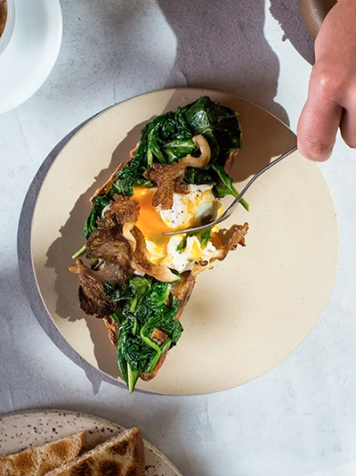
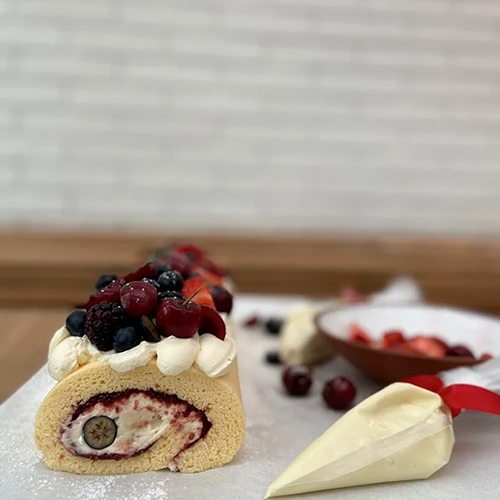
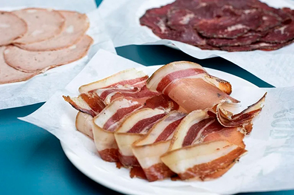
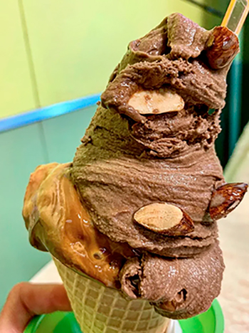

Restaurantes
Buenos Aires es una ciudad enorme con tantas oportunidades para comer bien. Ninguna guía puede ser completamente completa, pero esta lista incluye las comidas emblemáticas de la ciudad, los establecimientos más populares, algunas gemas ocultas y algunas aperturas interesantes.
Los mejores lugares para comer
Alo’s
Vale la pena visitar el suburbio de San Isidro para probar los platos de cinco estrellas que emergen de la cocina abierta de Alejandro Feraud. Este moderno bistró, que abre para el desayuno, el almuerzo y la cena, se convirtió rápidamente en un éxito por su forma única de transformar los sabores argentinos familiares. Asegúrese de disfrutar los postres de la pastelera estrella Yamila Di Renzo.
Narda Comedor
Narda Lepes es un nombre familiar en Argentina. La reconocida chef protagoniza programas de cocina y viajes, escribe libros de cocina, presenta un programa de radio y vende su propia línea de productos de supermercado y electrodomésticos de cocina. Narda Comedor, su restaurante en el Bajo Belgrano, pone a las verduras en el escenario principal. Muchos artículos están inspirados en los viajes de Lepes a través de Asia, Medio Oriente y América Latina, y un talentoso equipo de jóvenes cocineros sirve platos para el desayuno, el almuerzo, la merienda y la cena. Narda también abrió recientemente Comedor Diario, un café de desayuno durante todo el día en Palermo Hollywood.
Corte Comedor
Argentina es un país carnívoro, por lo que es un gran problema cuando la carnicería más comentada de la capital abre un restaurante. Aunque el chef uruguayo (y discípulo de Francis Mallmann) Santiago Garat cambia constantemente el menú, se puede esperar que el maestro sirva solomillo, churrasco, chuletón, lomo de cerdo y todos los chorizos caseros. La parada en la carnicería del local para ver las salchichas, el cerdo y la carne de res seca es imprescindible.
Heladería Gruta
Si bien Argentina puede ser famosa por su carne de res, el héroe anónimo de la escena gastronómica es el helado. El helado estilo italiano es un gran negocio en la ciudad, especialmente en esta heladería familiar de Belgrano que ha estado haciendo el dulce artesanal por más de 43 años. Si es demasiado difícil elegir entre los 50 sabores, elija su trifecta más popular: dulce de leche, sambayón y chocolate. Buen dato: si se pide medio kilo o más, cubrirán el helado con sus almendras caramelizadas caseras.
